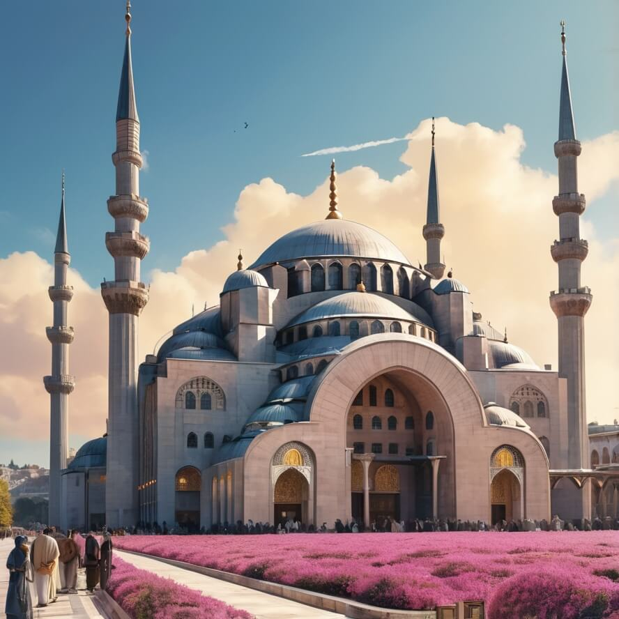

Namaz Hocası
Sabah Namazı
Sabah namazının kılınışı ve önemli bilgiler

Öğle Namazı
Öğle namazının kılınışı ve önemli bilgiler

İkindi Namazı
İkindi namazının kılınışı ve önemli bilgiler

Akşam Namazı
Akşam namazının kılınışı ve önemli bilgiler
Yatsı Namazı
Yatsı namazının kılınışı ve önemli bilgiler
Namaz Sureleri
Namazda okunan temel sureler, Arapça metinleri, okunuşları ve anlamları.
Namaz Duaları
Namazda okunan dualar, Arapça metinleri, okunuşları ve anlamları.
Abdest
Abdestin alınışı ve abdest ile ilgili önemli bilgiler.
Hutbe Duaları
Cuma ve bayram namazlarında okunan hutbe duaları.
Bayram Namazı
Ramazan ve Kurban Bayramı namazlarının kılınışı.
Cenaze Namazı
Cenaze namazının kılınışı ve önemli bilgiler.